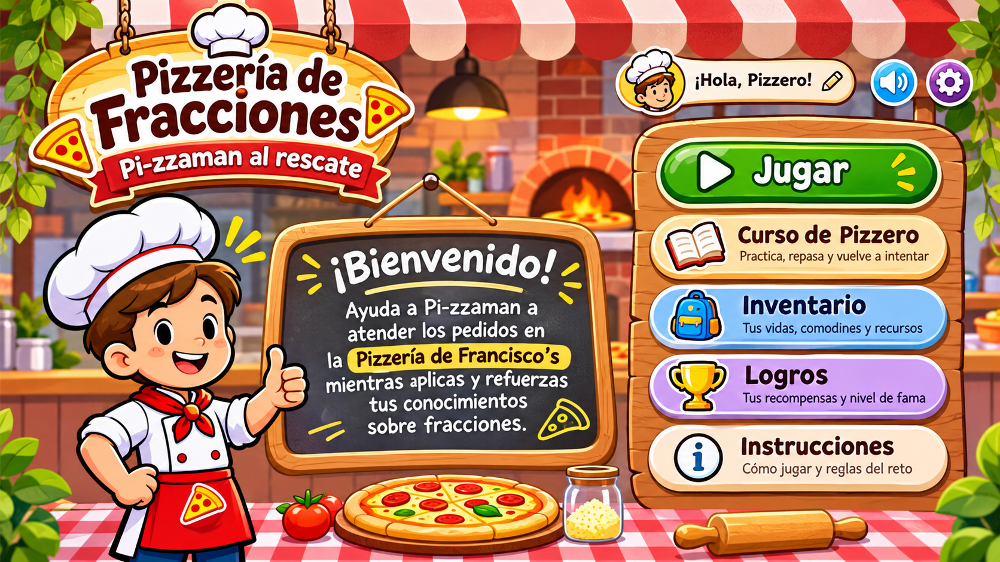

PEDIDO 1 DE 4

AVENTURA MATEMÁTICA · GRADO SEXTO
¡La pizzería te necesita!
Ayuda a Pi-zzaman y a Pi-zzagirl a salvar Francisco's. Prepara pedidos manipulando porciones, llenando vasos, calculando recetas y usando la caja registradora.
Puedes equivocarte y volver a practicar sin perder los niveles superados. Tu avance se guarda en este navegador.
🍕PorcionesRepresentar fracciones
🥤BebidasComparar y equivaler
🧀RecetasOperar con fracciones
🧾CajaRepartos y descuentos
MISIÓN DE FRANCISCO'S
Medidor de fama
Etapa1 de 4
FamaAprendiz
Tarjetas0
Intentos3
Reloj05:00
🌟 Fama de Francisco's0%
AprendizPizzeroEspecialistaMaestro